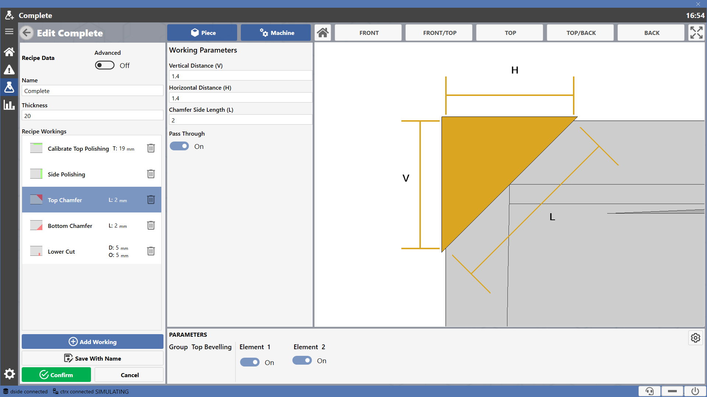
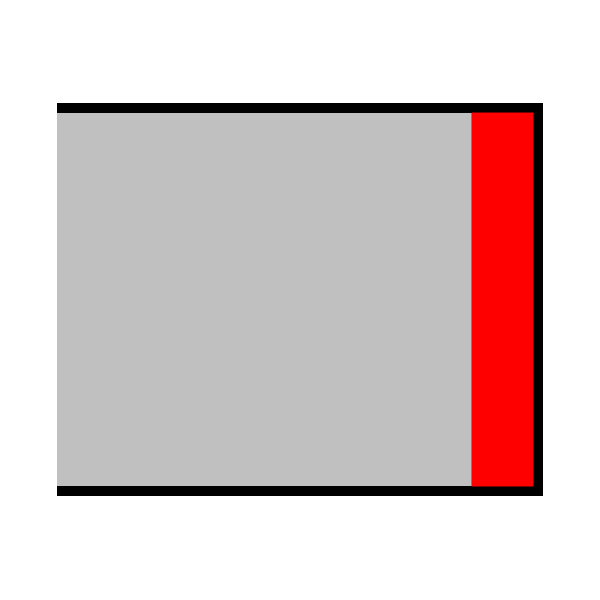
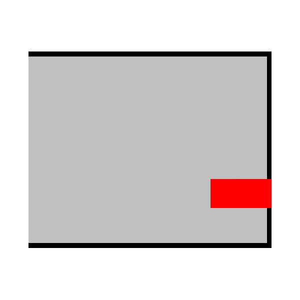
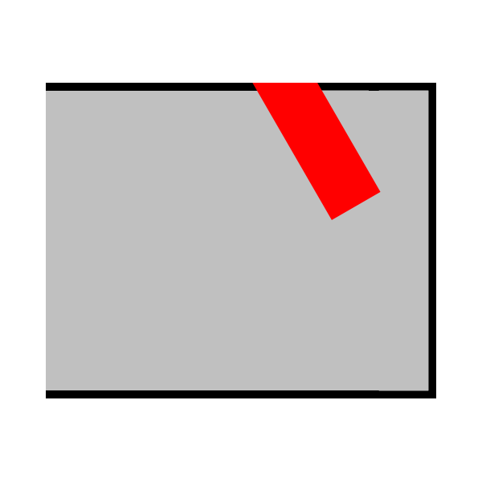
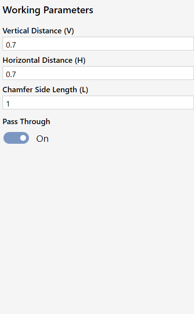
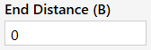
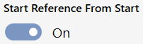
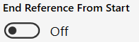

Bei jeder Bearbeitung kann der Bediener die Parameter ändern, welche deren Geometrie bestimmen. In der Vorschau rechts werden die betroffenen Maße dargestellt.

Verfügbare Bearbeitungen
Das Programm stellt die folgenden Bearbeitungen zur Verfügung.
 | Obere Kalibrierung |  | Obere Kalibrierung und Polierung |
 | Kantenschleifen |  | Kantenpolieren |
 | Oberfase |  | Unterfase |
 | Oberer Schnitt |  | Unterer Schnitt |
 | Kantenschnitt |  | Schnitt mit manueller Positionierung |
 | Stocken |  | Obere Reinigung |
Welche Bearbeitungen tatsächlich verfügbar sind, hängt von der Maschinenkonfiguration ab, das heißt von den an der Maschine montierten Gruppen.
Rezeptbearbeitungen
Die Bearbeitungen, aus denen das Rezept besteht, sind in der Liste im linken Bereich aufgeführt.
Jeder Eintrag zeigt eine Vorschau der Bearbeitung, ihren Namen und einige kennzeichnende Maße.

Bei Auswahl des Rezepts werden alle definierenden Parameter sowie eine Vorschau angezeigt. Der Bediener kann die Parameter ändern.
Zum Entfernen einer Bearbeitung aus dem aktuellen Rezept die Schaltfläche rechts in der entsprechenden Zeile verwenden.
 | Bearbeitung entfernen |
Bearbeitungsparameter
Die Bearbeitungsparameter können im dafür vorgesehenen Bereich eingegeben werden.

Im oberen Bereich werden die spezifischen Parameter der ausgewählten Bearbeitung angezeigt.
Bei Bearbeitungen, die diese Option unterstützen, kann der Bediener festlegen, ob sie über die gesamte Werkstücklänge ausgeführt werden sollen.
 | Durchgehende Bearbeitung |
Bei einer nicht durchgehenden Bearbeitung werden zusätzliche Parameter angezeigt.

 | Startabstand |
 | Endabstand |
Bei einem erweiterten Rezept stehen dem Bediener zusätzliche Einstellmöglichkeiten für die Parameter nicht durchgehender Bearbeitungen zur Verfügung.

 | Länge |
 | Maß sperren |
 | Anfang Startbezug |
 | Ende Startbezug |
Vorschau
Im rechten Bereich wird eine Vorschau der Bearbeitung am Werkstückmodell angezeigt. Dabei werden die Abmessungen hervorgehoben, die der Bediener in den Parametern eingeben muss.

Beim Wechsel zur Ansicht des Maschinenmodells wird die der Bearbeitung zugeordnete Gruppe grün hervorgehoben.